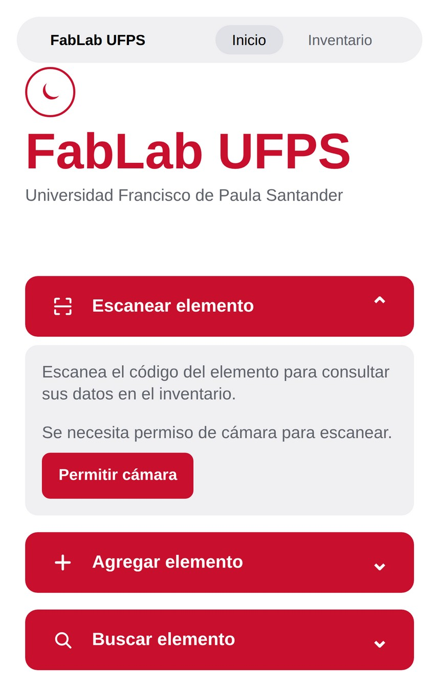
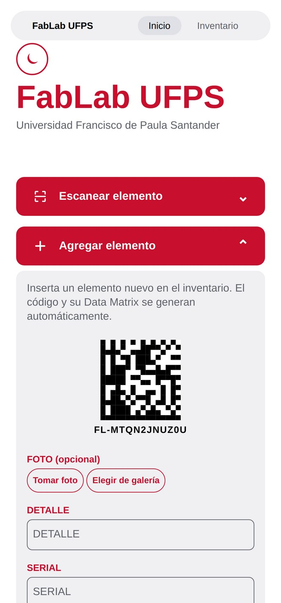
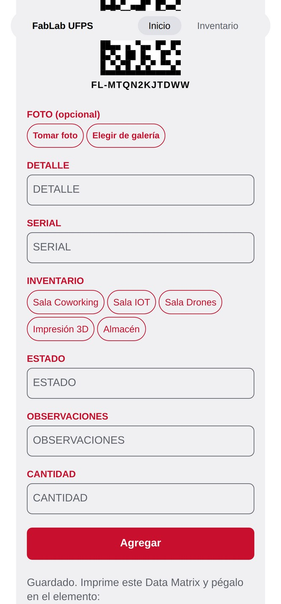
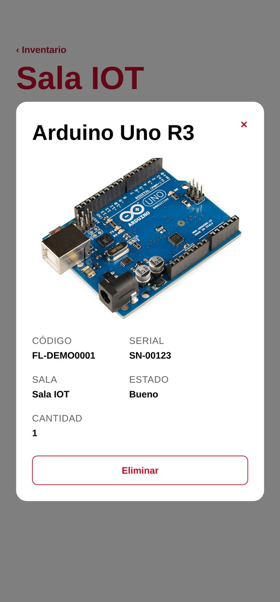

Identificación y trazabilidad de activos mediante códigos DataMatrix
Diagnóstico
El laboratorio administra maquinaria, mobiliario, componentes electrónicos e insumos en hojas de cálculo de Excel — un método que dejó de sostener la operación al crecer el número de salas.
La ubicación registrada depende de que alguien recuerde anotar el traslado. En la práctica no corresponde a la ubicación real.
La columna CANTIDAD mezcla números, guiones y la palabra INCONTABLE: ninguna suma es confiable.
Un microcontrolador o una resistencia no ofrece superficie para una etiqueta de código lineal o QR legible.
De cuatro copias entregadas por la coordinación, tres omitían las cantidades de doce elementos de recepción. Ninguna declara ser la vigente.
Estructura metodológica
Desarrollar e implementar un aplicativo móvil y web, soportado en una base de datos relacional desplegada, que permita gestionar, controlar e identificar automáticamente el inventario del FabLab mediante códigos DataMatrix.
Arquitectura de datos. Diseñar y desplegar el esquema relacional normalizado, migrando la información contenida hoy en hojas de cálculo.
Identificación. Desarrollar el módulo móvil y web con lectura y generación de códigos DataMatrix, con consulta de stock en tiempo real.
Gestión espacial. Implementar administración de edificios y salas, reubicación de elementos y registro histórico de traslados.
Los tres objetivos son secuenciales y corresponden a las tres capas del sistema: sin datos no hay qué identificar; sin identificación no hay cómo registrar movimientos.
Estado del arte
Revisión de trabajos 2018–2025 en gestión de inventario con código bidimensional y captura móvil en contextos institucionales.
| Antecedente | Simbología | Móvil | BD relacional | Historial de traslados |
|---|---|---|---|---|
| Rizqi et al. (2018) · Tailandia | QR | Sí | Sí | No |
| Hidalgo Santos (2019) · Perú | QR | Sí | MySQL | No |
| Lora et al. (2019) · Colombia | Barras / QR | Sí | Sí | No |
| Sahetapy y Suhirman (2025) | Código de barras | Sí | Sí | No |
| E-Inventory · UTeM, Malasia | Código de barras | Sí | Nube | No |
| Sistema web con QR · UMSA, Bolivia | QR | No | Sí | No |
| Makerspaces · RFID / NFC / QR | Varias | Parcial | Variable | No |
| Este proyecto | DataMatrix | Sí | MySQL | Sí |
Dos vacíos concretos: ninguno emplea una simbología viable en componentes de pocos milímetros, y ninguno guarda la historia de ubicaciones — solo la ubicación actual. En un laboratorio donde el material circula, importa desde dónde llegó.
Decisión de diseño
El QR tiene mayor capacidad máxima (≈4.296 caracteres frente a ≈2.335), pero gasta área en tres patrones de localización. Para una carga útil corta —un identificador de inventario— esa capacidad es irrelevante; lo que decide es el tamaño físico mínimo legible.
RFID permite lectura sin línea de vista y captura masiva, ventajas reales en grandes volúmenes. Pero el costo por unidad etiquetada es muy superior y exige lectores dedicados.
Nota de honestidad metodológica. Las cifras de tamaño mínimo legible (≈3 mm frente a ≈20 mm) y tolerancia al daño (≈50 % frente a ≈30 %) provienen de documentación técnica de fabricantes, no de fuente académica ni normativa. Se presentan como órdenes de magnitud y se validarán por medición propia sobre el equipo del laboratorio.
Arquitectura de software
Un solo desarrollo atiende Android, iOS y web, con acceso nativo a la cámara para el escaneo.
Capa de acceso a datos e importación masiva desde los libros de Excel existentes.
Motor relacional: la integridad referencial la garantiza el motor, no la disciplina del usuario.
La generación del símbolo se resuelve en el cliente con datamatrix-svg-ts, que produce el vector listo para impresión — no un mapa de bits.
Avance del desarrollo
Registro de un elemento, generación automática del código y consulta por sala. Capturas del cliente Expo sobre datos reales del laboratorio.




Resultado verificado
Los libros de Excel se cargaron a la base relacional con verificación de conteos contra las hojas de origen. Esta cifra es el resultado de la migración, no una estimación: cuantifica por primera vez la población real del inventario.
Fuente: migración del libro de inventario institucional, verificada hoja por hoja.
Marco metodológico
Diseño pre-experimental de un solo grupo: sin grupo de control no se aísla del todo el efecto de aprendizaje del operario. Se declara como limitación; un cuasi-experimento con un segundo laboratorio excedía los recursos.
| Variable | Indicador |
|---|---|
| Tiempo de registro | segundos por elemento |
| Tiempo de localización | segundos hasta ubicar |
| Integridad | duplicados e inconsistencias |
| Exactitud de ubicación | % sala registrada = real |
| Fiabilidad de lectura | % lecturas al primer intento |
Referencia de la literatura, no resultado propio. Sahetapy y Suhirman (2025) reportan captura 43 % más rápida, 98,5 % de exactitud de escaneo y 72 % menos errores de digitación. Son las cifras contra las que compararemos nuestras mediciones.
Estado y siguientes pasos